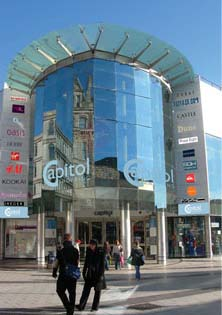

Les marques de haute couture, les chaînes de grands magasins et les dizaines de boutiques indépendantes des arcades victoriennes et édouardiennes dont Cardiff regorge ont établi sa réputation de destination britannique incontournable en matière de shopping.
Le Capitol Shopping Center

Le Capitol Center (auparavant: Capitol Exchange Center) est construit sur le site des anciens cinéma et théâtre Capitole, et est situé à l'extrémité orientale de la rue Queen, près de la Place Dumfries terminus d'autobus et de la gare.
Il se vante d'être la première destination de shopping à Cardiff, en mettant l'accent sur la qualité de la mode féminine (Wallis, Jaeger, Karen Millen, Dune, la phase Huit et Austin Reed).
Ouvert en 1990, le Centre a été construit dans le style d'architecture victorienne. En 1999/2000, le Centre a subi un réaménagement, qui comprend la rénovation de la zone piétonnière, la suppression de la restauration et de nouvelles entrées dans le centre.
Queen Street
Queen Street, une rue piétonne, constitue la principale artère commerciale de Cardiff. Vous y trouverez des marques reconnues comme Office, Fopp, Qube et Zara. Le centre commercial Capitol, à l’extrémité est de Queen Street, accueille également des magasins de marque comme Benetton, Fat Face et Virgin Megastore.
St David Hall
Principal centre commercial couvert de Cardiff, il offre un choix de plus de 200 magasins, restaurants et cafés, dont les grands magasins Debenhams et Marks and Spencer, Disney Store, Miss Selfridge et Peacocks.
Les Arcades
Les arcades commerciales de Cardiff, qui ont préservé leur cachet victorien et édouardien, accueillent désormais des dizaines de magasins et de cafés originaux. Vous y trouverez toutes sortes de cadeaux typiques du pays de Galles, des textiles gallois tissés à la main, des 'love spoons' (cuillères en bois sculpté offertes autrefois en gage d’amour) et T-shirts de rugby. Si vous souhaitez découvrir les dernières tendances en haute couture, les magasins indépendants de Morgan et Castle Arcades, comme Woodenwood ou Chessmen, sont incontournables. Vous pourrez également y reposer vos pieds et vous sustenter dans des cafés végétariens comme le Crumbs ou The Plan, spécialisés dans la nourriture et les boissons biologiques et équitables (FairTrade).
Marchés
Venez faire vos courses au Victorian Central Market, qui offre un large éventail de produits, du poisson frais aux fromages gallois traditionnels, en passant par les rouleaux de tissu gallois ou les téléphones mobiles. Autre endroit où trouver des produits frais du terroir : le Riverside Real Food Market qui se tient sur le Taff Embankment (quai de la rivière Taff), tous les dimanches, de 10 h 00 à 14 h 00.